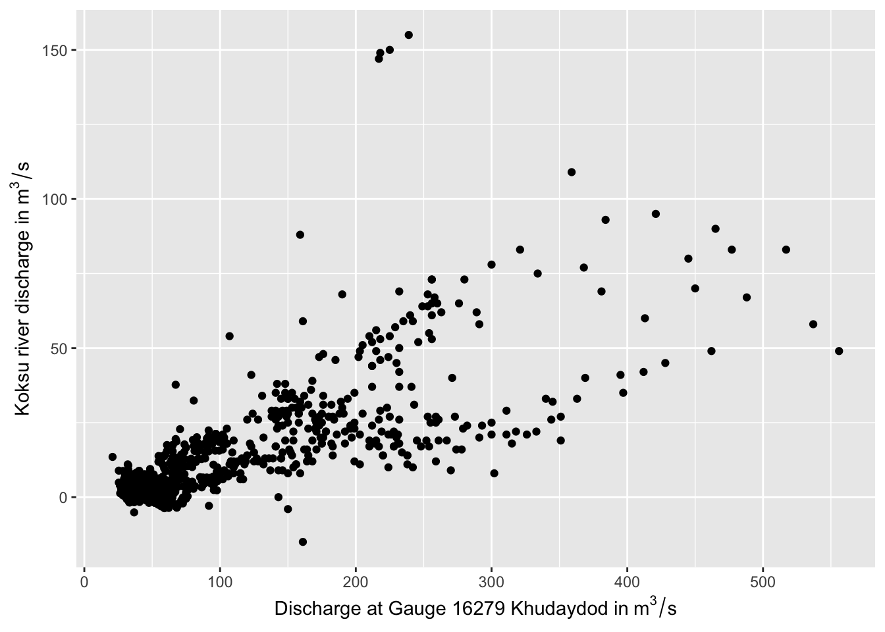
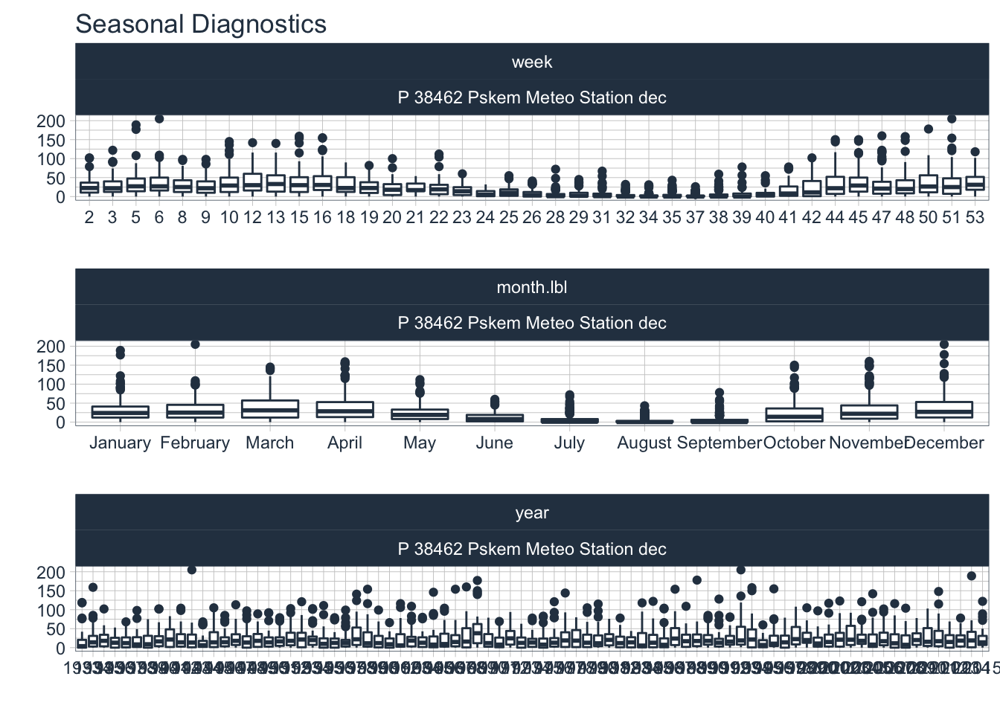
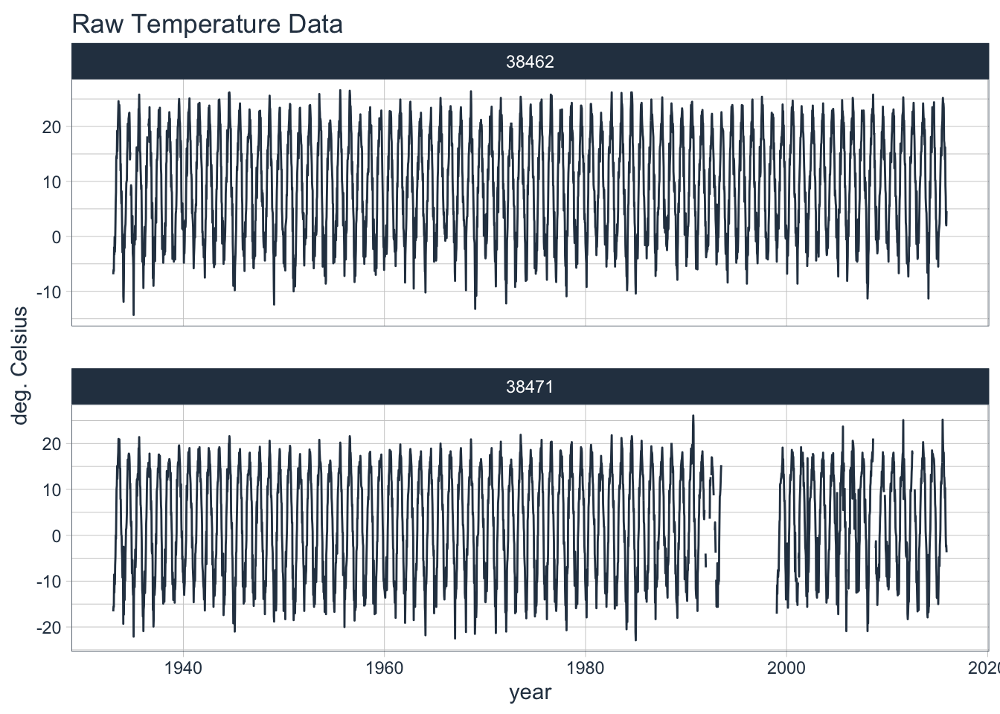

Chapter 3 Case Study - Chirchik River Basin
Prerequisites
This is the first ‘practical’ Chapter of the book and comes with software requirements. For the analysis of the available data we use R (R Core Team 2013). R is a computer language and environment for data analysis, statistical computation and data visualization. It can be downloaded at <https://www.r-project.org>. Together with R, we are using RStudio as the IDE (Team’ 2020).
Some R software packages used in this Chapter need to be installed so that the analyses can be done as shown there. The installation can be done in the following way:
The packages can then be loaded and made available in your R session.
library(devtools)
library(tidyverse)
library(lubridate)
library(timetk)
library(DataExplorer)
library(riversCentralAsia)3.1 Overview
The Chirchik is a river in the Tashkent region of Uzbekistan. Its natural basin covers 13’112 km2, not accounting for the modern-time interbasin water transfers to the neighboring Akhangaran basin in the south (the outline of the basin is shown in Figure 3.1). In terms of total runoff contribution, it is the biggest right tributary of the Syr Darya (see also further below in Section 3.3.1).
The river is formed by the confluence of the Chatkal and the Pskem rivers. They emerge at the south-western end of the Tien Shan mountains, i.e. the Talas Alatau, in the border region of Kyrgyzstan, Kazakhstan and Uzbekistan. The main tributaries are in clock-wise direction starting from north: Ugam, Pskem, Kosku and Chatkal. The Charvak reservoir receives water from these rivers. Ugam is the largest right tributary downstream of the reservoir and Aksak Ata the largest left-side tributary.
Below the Charvak hydroelectric power station, the river water gets diverted in numerous canals for irrigation in and around the Tashkent oasis and for interbasin water transfer to the Akhangaran basin in the south. As part of the Chirchik-Bozsuu cascade, several smaller dams along the river serve hydropower production and irrigation purposes.

Figure 3.1: Overview over the Chirchik river basin with tributaries and the location of the main gauging stations in the zone of runoff formation and near the confluence with the Syr Darya.
Figure 3.1 shows a comprehensive overview of the Chirchik river basin and its tributaries as well as relevant modern gauging stations. Gauges are indicated with the semi-round shapes and the corresponding five digit official code as utilized by the Uzbek Hydrometeorological Service (HydroMet) indicated. The virtual gauge is not a real gauge in the sense that reservoir inflow is calculated from all contributing tributary flow components, i.e. Chatkal river, Pskem river, Nauvalisoy and Koksu Rivers.
Koksu however, with a basin area of 392 km\(^2\), is ungauged. So how does the HydroMet quantify its runoff contribution?
3.2 Discharge Estimation in Ungauged Subcatchments
Before the closure of the Charvak dam and the subsequent filling of the reservoir in and after 1974, the HydroMet experts started a detailed 3-years measurement comparison campaign at Charvak gauge and at gauge 16279 in Khudaydod (see Figure 3.1). Both are located on Chatkal river. Charvak gauge had to be decommissioned after the closure of the dam because it got flooded.
The confluence of Koksu river with Charvak river is just upstream of the former Charvak gauge. Using daily data from the measurement comparisons campaign, the HydroMet experts could then relate Charvak gauge discharge to Khudaydod discharge using a linear relationship. At the same time, they were now able to relate Koksu discharge to the discharge at Chatkal River in Khudaydod in the following manner
\[ Q_{Koksu} \propto Q_{Charvak} - Q_{16279} \]
We show the procedure here. After loading the riversCentralAsia Package as shown above, the relevant daily data from 01/01/1965 - 31/12/1967 can be loaded.
KoksuDischarge # load DataThe data is stored in long format, meaning that measurements in time and for the two gauging stations are just stacked on top of each other in one long table. For the purpose here, we prefer the wide format where we have one date column with unique dates and then the data listed for each station in corresponding columns.
KoksuDischarge_wide <- KoksuDischarge %>% pivot_wider(id_cols = 'date',values_from = 'data',names_from = "code")
KoksuDischarge_wideThe runoff contribution of Koksu can be calculated in a simple manner.
# Adding Koksu discharge to the dataframe
KoksuDischarge_wide <- KoksuDischarge_wide %>% mutate(Koksu = Charvak - `16279`)
KoksuDischarge_wideThe relationship can now be visualized.
# and visualize
ggplot(KoksuDischarge_wide, aes(`16279`, Koksu)) +
geom_point() +
xlab(bquote('Discharge at Gauge 16279 Khudaydod in'~m^3/s)) +
ylab (bquote('Koksu river discharge in'~m^3/s))
We can perform a linear regression to related discharge at Khudaydod to the one at Koksu. The coefficients of the linear regression can be obtained in the following way:
lm <- lm(Koksu ~ 0 + `16279`,KoksuDischarge_wide)
summary(lm)##
## Call:
## lm(formula = Koksu ~ 0 + `16279`, data = KoksuDischarge_wide)
##
## Residuals:
## Min 1Q Median 3Q Max
## -38.295 -5.867 -1.918 1.416 120.419
##
## Coefficients:
## Estimate Std. Error t value Pr(>|t|)
## `16279` 0.14469 0.00298 48.55 <2e-16 ***
## ---
## Signif. codes: 0 '***' 0.001 '**' 0.01 '*' 0.05 '.' 0.1 ' ' 1
##
## Residual standard error: 12.4 on 987 degrees of freedom
## Multiple R-squared: 0.7049, Adjusted R-squared: 0.7046
## F-statistic: 2357 on 1 and 987 DF, p-value: < 2.2e-16Please note, in the specification of the linear model we add the 0 term to force the regression through the origin. Hence, the discharge of Koksu River can be estimated to be
\[ Q_{Koksu} = 0.145 * Q_{Khudaydod} \]
3.3 Analysis of Available Data
3.3.1 Discharge Data
The riversCentralAsia Package provides available data of the gauging and meteorological stations in the Chirchik River Basin. Once this package is loaded, we are ready to start with data analysis.
ChirchikRiverBasin # load dataOne can get more information about the data by typing ?ChirchikRiverBasin in the console. Notice that, as above, the data are stored in long format. In other words, data from the individual stations is just stacked on top of each other. In this dataframe (called tibble in R), each row contains one time-stamped observation. Next to the data, the long-term discharge norm is stored in the tibble. The units of the data stored in the corresponding columns is stored and the data type (Q for discharge, T for temperature and P for precipitation). The station code is available as well as the station name, the river (subcatchment) and the basin name. In our case, the latter is always Chirchik. The column ‘res’ indicates the time resolution of the available data (either dec for 10-days decadal or mon for monthly). Finally, where known, the stations’ latitude and longitude, altitudes and the upstream basin size are given.
There are 7 discharge stations where type = Q. These are all unique stations as can be identified by their stations codes (see above in Figure 3.1 for the station locations).
We can generate timeseries plots of the river discharge data only by setting the corresponding station filter via filter(type=='Q').
data <- ChirchikRiverBasin
data %>% filter(type=='Q') %>% group_by(type,code,station,resolution) %>% plot_time_series(date,data,.facet_ncol = 2,.interactive = FALSE, .smooth = FALSE, .title = 'Available discharge data of Chirchik River Basin')
The data available are near complete historic records with the discharge measurments at Gazalkent gauge starting already in 1900. The monthly record of the station is shown here in full. You can zoom into the time series and investigate it in detail.
data %>% filter(code=='16262') %>% plot_time_series(date,data,
.interactive = TRUE,
.smooth = FALSE,
.title = "Monthly discharge at Gauge 16262, Gazalkent",
.x_lab = 'date',
.y_lab = 'Discharge in cubic meters per second',
.plotly_slider = TRUE)As is easily visible, the June 1969 discharge was the historic monthly mean maximum with 1’220 m3/s.
In a similar vain, the annual timeseries can be displayed.
data %>% filter(code=='16262') %>%
summarise_by_time(date,.by = 'year',value=sum(data,na.omit=TRUE)) %>%
plot_time_series(date,value,
.interactive = TRUE,
.title = "Annual discharge at Gauge 16262, Gazalkent",
.x_lab = 'date',
.y_lab = 'Discharge in cubic meters per second',
.smooth = FALSE)The characteristics of the timeseries feature the typical snowmelt-driven runoff pattern with pronounced seasonality and interannual variability. At Chinaz near the confluence of the Chirchik River with the Syr Darya, however, a changing discharge regime can easily be identified over time. The drastic decrease in discharge there is due to two effects. First, in the 1960ies, the upstream irrigation greatly increased together with the interbasin water transfer. Second, the closure of the Charvak dam in 1974 and the subsequent filling of the dam decreased discharge during the filling period. Furthermore, the interannual variability of flows decreased from there onwards due to the now regulated flow regime. This latter effect is also visible at the Gazalkent gauge. The non-stationarity in the discharge timeseries at these stations is thus explained by anthropogenic effects.
Getting summary statistics of the gauged discharges allows us to quickly understand runoff contributions of the individual tributaries.
data_stats <- data %>% filter(type == 'Q') %>%
dplyr::select(date,data,code) %>% group_by(code) %>%
summarise(mean = mean(data,na.rm=TRUE),
min = min(data,na.rm=TRUE),
max = max(data,na.rm=TRUE),
sd = sd(data,na.rm=TRUE),.groups = 'keep')
data_stats %>% ungroup()The largest left tributary to Chirchik below the Charvak reservoir Aksak Ata. The gauging station on the river got dismantled a long time ago. An average long-term mean discharge of 2.35 m\(^{3}\)/s is a solid estimated of its contribution to the overall discharge of Chirchik. Thus, if we add up long-term average discharge at Gazalkent and the one from Aksak Ata we obtain an annual norm discharge of 231 m\(^{3}\)/s.
Chirchik river is thus the biggest right-tributary to the Syr Darya. Chatkal river contributes exactly half to it (115.7 m\(^{3}\)/s) and Pskem river approximately one third (34.4% or 79.4 m\(^{3}\)/s). Nauvalisoy is only a very small river with 1.6% runoff contribution (3.8 m\(^{3}\)/s). From the available data, the long-term average runoff contribution by the ungauged Koksu river can be estimated to be 6.4 m\(^{3}\)/s or 2.8%. Downstream of the reservoir, Ugam river contributes an additional 9.7% (22.4 m\(^{3}\)/s) to the total flow.
Let us now turn our attention to the seasonality of the tributaries. We can easily investigate it using the timetk package function plot_seasonal_diagnostics(). We exclude Chinaz gauge in our analysis for the above-mentioned reason that flow there is no longer representing a natural runoff regime. First, we plot the key gauged tributaries to the Charvak reservoir, i.e. Chatkal, Pskem and Nauvalisoy rivers.
data %>% filter(type=='Q',code!='16275',code!='16294',code!='16300',code!='16262') %>%
dplyr::select(date,data,code) %>%
group_by(code) %>%
plot_seasonal_diagnostics(.date_var = date,.value = data,.interactive = FALSE,.feature_set = c("week","month.lbl"))
The seasonality with the spring and summer runoff peaks is striking in all three rivers. Nauvalisoy discharge peaks, on average, during or around week 20. Chatkal river discharge peaks around week 23 and Pskem river around week 26. These differences can be explained with the different mean catchment elevations where Nauvalisoy is the lowest lying and Pskem catchment the highest catchment (see also Chapter 2 for more information).
Discharge seasonality of the gauging stations downstream of Charvak reservoir is shown below. Note that we only have monthly values for these stations and are thus only showing the monthly seasonality panels.
data %>% filter(type=='Q',code!='16279',code!='16298',code!='16290',code!='16294') %>%
dplyr::select(date,data,code) %>%
group_by(code) %>%
plot_seasonal_diagnostics(.date_var = date,.value = data,.interactive = FALSE,.feature_set = c("month.lbl"))
3.3.2 Meteorological Data
For meteorological data, we have precipitation P and temperature T data from two stations, i.e. Pskem Meteo Station, Chatkal Meteo Station. For the station at the Charvak Reservoir, we only have precipitation data.
data %>% filter(type!='Q') %>% group_by(type,code,station,resolution) %>% plot_time_series(date,data,.facet_ncol = 1,.interactive = FALSE,.smooth = FALSE)
data %>% filter(type=='P',code==38462) %>% group_by(type,code,station,resolution) %>% plot_seasonal_diagnostics(date,data,.interactive = FALSE,.feature_set = c("week","month.lbl","year"))## Warning: Removed 111 rows containing non-finite values (stat_boxplot).